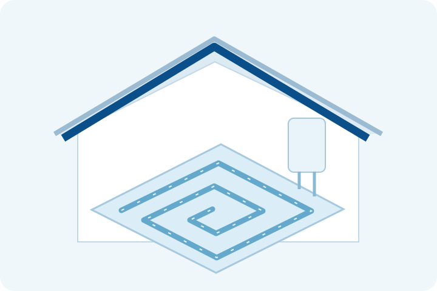

Évaluation du système
Nous examinons l’usage prévu, les équipements existants et les conditions du site.

Évaluation, installation et assistance pour planchers chauffants, avec définition du système et des travaux adaptés à l’espace.
Le type de système, les travaux, la disponibilité et les conditions du devis sont confirmés après évaluation.

Nous examinons l’usage prévu, les équipements existants et les conditions du site.
Nous définissons la solution et le périmètre, y compris les adaptations à intégrer à la proposition.
Nous évaluons l’état de l’équipement et les anomalies avant de proposer entretien, réparation ou remplacement.
Indiquez la marque, le modèle et le type de système. La possibilité et le périmètre de l’intervention sont confirmés après analyse.
Certaines demandes nécessitent une évaluation sur place. Le déplacement et ses conditions sont confirmés avant le rendez-vous.
La proposition précise les travaux et les conditions. Équipements, adaptations, matériaux et exclusions éventuelles doivent être définis avant acceptation.
Le type de système, les travaux, la disponibilité et les conditions du devis sont confirmés après évaluation.
Demander une évaluation